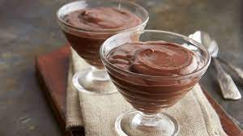

Homemade Chocolate Pudding Recipe

Description
This is a simple and easy recipe for the best homemade chocolate pudding.
This recipe creates a rich and silky chocolate pudding that will become
your families favorite snack. Top with whipped cream if desired to add
even more sweetness to this treat. Never use boxed chocolate pudding mix again.
This is yet another quick recipe for even the busiest of parents.
Ingredients
- 1/3 cup white sugar
- 1/3 cup unsweetned cocoa powder
- 3 tablespoons cornstarch
- 1/4 teaspoon salt
- 2 and 1/2 cups milk
- 1 and 1/2 teaspoons vanilla extract
Steps
- Sift and whisk sugar, cocoa powder, cornstarch, and salt togther
in a saucepan.
- Heat saucepan over mediium heat. Pour milk slowly, whisking constantly
until incorporated. Cook, stirring often with a metal sppon, until pudding
is thicker and clings to spoon, about ten minutes.
- Remove from heat and stir in vanilla extract. Serve immediately, or chill
in the refrigerator for at least two hours.